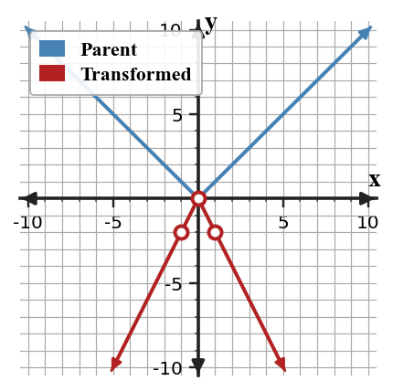
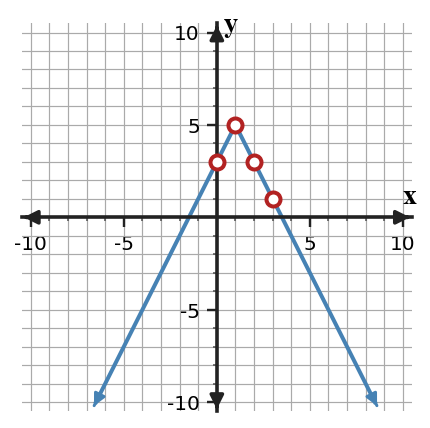

Transformations
Mathematical idea: Transformations change key points in predictable ways, so equations, tables, and graphs should agree.
Today you will use transformation rules to build graphs and check whether representations match. You will pay special attention to reflections, vertical scale factors, and key points.
Learning Target
Learning Target: Students will analyze and graph transformations involving stretches, compressions, and reflections.
I can statements
- I can design transformed graphs using stretches, compressions, reflections, and translations of parent functions.
- I can apply transformation rules to key points and features across function families.
- I can assess whether an equation, graph, or table represents the same transformed function.
What's To Come
This is a long-range preview for future lessons. Do not solve it today. Instead, annotate it individually. Circle anything familiar, underline symbols or directions that seem important, and write notes about what information you think will be needed later.
As you annotate, ask yourself: What parts (words, symbols, graphs) do you KNOW? What parts look FAMILIAR? What parts look like jibberish?
Synthesize an equation, key-point table, and graph description for a function made from $y=|x|$ by reflecting over the $x$-axis, stretching vertically by factor $2$, and translating right $1$ and up $3$. Explain how each representation shows every transformation.
Intro
Directions
Read the introduction aloud with a partner or in a small group. As you read, annotate the text by highlighting important ideas, circling key vocabulary, and writing short notes about connections, questions, or predictions in the margins.
A transformation can change the size, direction, and position of a parent graph. A vertical stretch or compression multiplies the output values by a scale factor. For example, $g(x)=3f(x)$ makes outputs three times as far from the $x$-axis as the original outputs.
A reflection flips a graph across a line. When a function is multiplied by a negative outside, the outputs change sign and the graph reflects over the $x$-axis. Points above the axis move below it, and points below the axis move above it.
A table can act like a checkpoint for a transformed equation. If one output does not match substitution into the equation, then at least one representation needs to be revised. The mismatch is evidence that the equation, table, or graph is not describing the same function.
Transformation equations, graphs, and tables all show the same changes in different ways. Key features such as the vertex, intercepts, symmetry, and rate behavior help you connect the representations.
In modeling, transformations let you adjust a parent function to fit a situation that is steeper, flatter, flipped, or shifted. The best model is not just a correct equation; it is a set of representations that all tell the same story.
Stop and Discuss
- What does a vertical stretch or compression do to the outputs of a function?
- How does a reflection over the $x$-axis change a graph?
- Why should a transformed table match the transformed equation?
Multiplying a function outside changes every output value.
If $g(x)=-2f(x)$, each output is doubled in distance from the $x$-axis and then reflected over the $x$-axis.
| $x$ | -1 | 0 | 1 |
|---|---|---|---|
| $f(x)=|x|$ | 1 | 0 | 1 |
| $g(x)=-2|x|$ | -2 | 0 | -2 |

Context: If output means height relative to ground, a negative scale factor would reverse direction, so context should make that reversal sensible.
Example 1: Name a Vertical Transformation
A parent function $f$ is changed to $g(x)=-\frac{1}{2}f(x)$.
- Name the transformation or transformations from $f$ to $g$.
- If $f(4)=8$, find $g(4)$.
- Explain how the negative sign and the factor $\frac{1}{2}$ affect the graph.
You Try It 1: Name a Vertical Transformation
A parent function $f$ is changed to $g(x)=4f(x)$.
- Name the transformation from $f$ to $g$.
- If $f(-2)=3$, find $g(-2)$.
- Explain how the factor $4$ affects distances from the $x$-axis.
Stop and Discuss
- How did multiplying outside the function change the outputs?
- What is different between a stretch and a reflection?
Example 2: Graph a Transformed Absolute Value Function
Graph $y=2|x-2|-1$ using transformed key points from $y=|x|$.

- Plot the vertex.
- Plot four transformed key points around the vertex.
- Explain how the factor $2$ changes the steepness of the arms.
You Try It 2: Graph a Transformed Absolute Value Function
Graph $y=-3|x+2|+4$ using transformed key points from $y=|x|$.
- Plot the vertex.
- Plot four transformed key points around the vertex.
- Explain how the negative sign changes the direction of the graph.
Stop and Discuss
- Which key point stayed easiest to locate after the transformation?
Example 3: Graph a Transformed Quadratic Function
Graph $y=-\frac{1}{2}(x+1)^2+4$ using transformed key points from $y=x^2$.
- Plot the vertex.
- Plot at least four transformed key points.
- Explain how the negative sign and $\frac{1}{2}$ affect the graph.
You Try It 3: Graph a Transformed Quadratic Function
Graph $y=2(x-3)^2-6$ using transformed key points from $y=x^2$.
- Plot the vertex.
- Plot at least four transformed key points.
- Explain how the factor $2$ affects the graph compared with $y=x^2$.
Stop and Discuss
- How did the transformation rules change the parent quadratic points?
To check whether a table matches a transformed function, substitute each input into the equation and compare the output.
For $y=-2|x-1|+5$, the input $x=3$ gives $$y=-2|3-1|+5=-4+5=1.$$
| $x$ | 0 | 1 | 2 | 3 |
|---|---|---|---|---|
| Equation output | 3 | 5 | 3 | 1 |
| Table claim | 3 | 5 | 3 | 0 |

Context: A single incorrect output can break the connection between the equation, table, and graph, so the first mismatch should be revised.
Example 4: Find and Fix a Mismatch
The equation $y=-2|x-1|+5$ and the table are meant to match.
| $x$ | 0 | 1 | 2 | 3 |
|---|---|---|---|---|
| $y$ | 3 | 5 | 3 | 0 |
- Substitute $x=0$ and $x=1$ to check the first two outputs.
- Find the first mismatch in the table.
- Revise the incorrect output and explain your evidence.
You Try It 4: Find and Fix a Mismatch
The equation $y=3|x+1|-2$ and the table are meant to match.
| $x$ | -2 | -1 | 0 | 1 |
|---|---|---|---|---|
| $y$ | 1 | -2 | 1 | 5 |
- Substitute $x=-2$ and $x=-1$ to check the first two outputs.
- Find the first mismatch in the table.
- Revise the incorrect output and explain your evidence.
Stop and Discuss
- Why is substitution a reliable way to find a mismatch?
Summary
You analyzed transformations by applying stretches, compressions, reflections, and translations to parent functions. Each transformation changes key points in a predictable way.
Multiplying outside the function changes outputs; a negative factor reflects over the $x$-axis, and the absolute value of the factor controls vertical stretch or compression. Tables and graphs should match the equation after those output changes.
A common error is changing the graph visually without checking transformed coordinates.
Strong understanding means you can build a transformed graph, explain the parameter effects, and verify whether another representation matches the same function.
Common Mistakes
- Forgetting the reflection. Why it is tempting: the stretch factor gets attention first. What to check instead: check whether the outside multiplier is negative.
- Stretching inputs instead of outputs. Why it is tempting: the graph movement feels geometric. What to check instead: multiply the $y$-values for vertical transformations.
- Skipping key points. Why it is tempting: the equation seems enough. What to check instead: make a small table of transformed points.
- Trusting every table value. Why it is tempting: tables look official. What to check instead: substitute into the equation to verify.
- Mixing translations with stretches. Why it is tempting: several parameters appear together. What to check instead: apply transformations to key points in an organized order.
Optional Future Task Reflection
Look back at the future task. Do not solve it yet. Highlight one part that makes more sense now than it did at the beginning. Circle one part that still feels unfamiliar. Write one sentence about what representation you would look at first.
In $g(x)=3f(x)$, name the transformation from $f$ to $g$.
Use the blank coordinate plane to graph $y=-2|x+1|+3$. Plot the vertex and at least four transformed key points.

What is one idea about function transformations you understand better now than at the start of class? Write at least one complete sentence.
What is one thing about function transformations you still want to understand or practice? Be specific — name the idea, not just "everything."